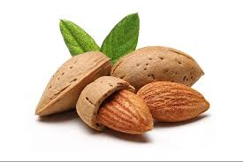

बादाम रोगन के फायदे --
बोर्नविटा , कॉम्प्लान आदि पर हज़ारों रुपये खर्च करने की बजाये बादाम रोगन ख़रीदे।
- सोने से पूर्व आँखों के चारों ओर बादाम रोगन की हल्की-हल्की मालिश करने से चेहरे पर निखार आता है और झुर्रियां नहीं पड़ती।
- सिर की खुश्की मिटाने के लिए सिर पर बादाम रोगन की मालिश करें।
- बाल न झड़े, इसके लिए भी सिर पर बादाम रोगन की मालिश करते हैं।
- रात में गाय के गर्म दूध में से चम्मच बादाम रोगन दाल कर पिने से दिमाग तेज़ होता है।
- बादाम रोगन गरम दूध में डाल कर पिने से कब्ज दूर होती है।
- नाक में दो - दो बूंद बादाम रोगन रात में सोते वक्त डालने से आँखों की ज्योति तेज़ होती है।ये नस्य दिमाग भी तेज़ करता है।
- बादाम रोगन के नस्य से सिर दर्द दूर होता है।
- यदि सुनने की शक्ति कम होने का भय हो तो बादाम रोगन की एक-एक बूंद प्रतिदिन डालें।
- आंवले के रस के साथ बादाम तेल की मालिश बालों का झड़ना, असमय सफेद होना, पतला होना और डैंड्रफ रोक सकती है।दो-तीन बूंद बादाम रोगन व एक चम्मच शहद की मालिश रोमकूप खोल चेहरे पर चमक लाती है।
- इसका सेवन तनाव कम करता है।
- ये हार्ट के लिए लाभदायक है।
- सर्दियों में शरीर का तापमान बनाए रखता है।
- छोटे बच्चों के लिए लाभदायक है।
- वजन घटाने में मदद करता है।
- गर्दन में दर्द होने पर इससे मालिश करने पर ठीक हो जाता है।
- इसकी सिर में मालिश करने से नींद अच्छी आती है।